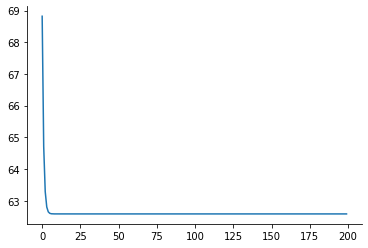
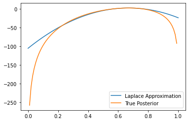

# Importing modules
try:
import jax # JAX is a library for differentiable programming
except ModuleNotFoundError:
%pip install jaxlib jax
import jax
import jax.numpy as jnp # JAX's numpy implementation
try:
import tensorflow_probability.substrates.jax as tfp # TFP is a library for probabilistic programming
except ModuleNotFoundError:
%pip install tensorflow-probability
import tensorflow_probability.substrates.jax as tfp
import matplotlib.pyplot as plt
import warnings
import seaborn as sns
from tqdm import trange
import logging
logger = logging.getLogger()
class CheckTypesFilter(logging.Filter):
def filter(self, record):
return "check_types" not in record.getMessage()
logger.addFilter(CheckTypesFilter())Sampling from the Bernouli distribution with \(\theta\) = 0.7
bernoulli_samples = tfp.distributions.Bernoulli(
probs=0.7
) # Create a Bernoulli distribution with p=0.7
samples = bernoulli_samples.sample(
sample_shape=100, seed=jax.random.PRNGKey(0)
) # Sample 100 samples from the distribution
print(samples)
alpha = 3 # Set the parameter (alpha) of the Beta distribution
beta = 5 # Set the parameter (beta) of the Beta distribution
samples.sum()[1 0 0 1 1 0 1 1 1 1 1 1 0 0 1 0 1 1 1 1 1 0 1 0 1 1 1 1 0 1 0 1 1 0 1 1 1
1 0 1 1 1 1 0 0 0 1 1 1 0 1 1 0 1 1 1 1 0 1 1 1 0 1 0 0 0 1 1 1 0 1 0 0 1
1 1 1 0 1 1 0 1 1 1 1 1 1 0 1 1 1 1 1 1 0 1 1 0 0 1]DeviceArray(69, dtype=int32)Negative log joint
def neg_logjoint(theta): # Define the negative log-joint distribution
alpha = 3
beta = 5
dist_prior = tfp.distributions.Beta(alpha, beta)
dist_likelihood = tfp.distributions.Bernoulli(probs=theta)
return -(dist_prior.log_prob(theta) + dist_likelihood.log_prob(samples).sum())Calculating \(\theta_{map}\) by minimising the negative log joint using gradient descent
gradient = jax.value_and_grad(
jax.jit(neg_logjoint)
) # Define the gradient of the negative log-joint distribution
lr = 0.001 # Set the learning rate
epochs = 200 # Set the number of epochs
theta_map = 0.5 # Set the initial value of theta
losses = []
for i in trange(epochs): # Run the optimization loop
val, grad = gradient(theta_map)
theta_map -= lr * grad
losses.append(val)
plt.plot(losses)
sns.despine()
theta_map100%|██████████| 200/200 [00:02<00:00, 71.83it/s] DeviceArray(0.6698113, dtype=float32, weak_type=True)
Verification of obtained \(\theta_{map}\) value using the formula:
\(\theta_{map} = \frac{n_h+\alpha-1}{n_h+n_t+\alpha+\beta-2}\)
nH = samples.sum().astype("float32") # Compute the number of heads
nT = (samples.size - nH).astype("float32") # Compute the number of tails
theta_check = (nH + alpha - 1) / (
nH + nT + alpha + beta - 2
) # Compute the posterior mean
theta_checkDeviceArray(0.6698113, dtype=float32)Computing Hessian and Covariance
hessian = jax.hessian(neg_logjoint)(
theta_map
) # Compute the Hessian of the negative log-joint distribution
hessian = jnp.reshape(hessian, (1, 1)) # Reshape the Hessian to a 1x1 matrix
cov = jnp.linalg.inv(hessian) # Compute the covariance matrix
covDeviceArray([[0.00208645]], dtype=float32)Plots Comparing the distribution obtained using Laplace approximation with actual Beta Bernoulli posterior
# Compute the Laplace approximation
x = jnp.linspace(0, 1, 100) # Create a grid of 100 points between 0 and 1
x = x.reshape(-1, 1) # Reshape the grid to a 100x1 matrix
Laplace_Approx = tfp.distributions.MultivariateNormalFullCovariance( # Create a multivariate normal distribution
loc=theta_map, covariance_matrix=cov
)
Laplace_Approx_pdf = Laplace_Approx.prob(
x
) # Compute the probability density function of the Laplace approximation
plt.plot(x, Laplace_Approx_pdf, label="Laplace Approximation")
# Compute the true posterior distribution
alpha = 3
beta = 5
true_posterior = tfp.distributions.Beta(
alpha + nH, beta + nT
) # Create a Beta distribution
true_posterior_pdf = true_posterior.prob(
x
) # Compute the probability density function of the true posterior
plt.plot(x, true_posterior_pdf, label="True Posterior")
plt.xlim(0, 1)
plt.legend()<matplotlib.legend.Legend at 0x7f2181895a10>
# Compute the log-probability density function of the Laplace approximation
true_posterior_pdf_log = true_posterior.log_prob(x)
Laplace_Approx_pdf_log = Laplace_Approx.log_prob(x)
plt.plot(x, Laplace_Approx_pdf_log, label="Laplace Approximation")
plt.plot(x, true_posterior_pdf_log, label="True Posterior")
plt.legend()<matplotlib.legend.Legend at 0x7f2180719250>